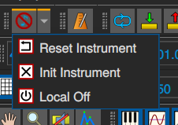

The Panic Toolbar

Due to the way MIDI works there is sometimes a need to reinitialize the state of MIDI devices, this functionality is collected on this toolbar.
The Panic button
In rare cases some midi notes may be stuck on, and you just want them to shut up immediately.
The ‘panic’ button sends the midi controller ‘all sounds off’ and ‘reset all controls’ mode commands (controllers 0x78 and 0x79) to all channels on all MusE midi ports.
The panic button is found in the Arranger and Midi Editor toolbars, and several other window toolbars.
The Local Off button
The local off sends the midi controller ‘local off’ mode command (controller 0x7a) to all channels on all MusE midi ports.
The Reset Instrument button
The ‘reset instrument’ button sends note-offs to all channels on all MusE midi ports.
The Init Instrument button
The ‘init instrument’ button re-sends initialization messages (typically mode sysex messages) as defined by the instrument (see the Edit Instrument dialog).
This is usually done automatically on project load but can be turned off in Settings, hence the manual button here.